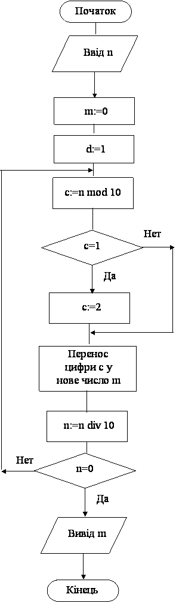

Назад
Зміст
Вперед
Задачі на зміну цифр натурального числа
Згадаємо, що десяткова система числення є позиційною. В позиційній системі числення значення кожної цифри залежить від її позиції – місця у числі.
Число 4131 насправді має таки склад:
4131=4*1000+1*100+3*10+1=4*103+1*102+3*101+1*100
Число 10, степені якого використовуються у цій формулі називається основою системи числення, а степені десятки – це вага цифри.
Приклад 1
Дано натуральне число. Змініть у ньому всі цифри 1 на 2.
Результат роботи програми
Змінні:
Вхідні:
- n – натуральне число (цілого типу Longint)
Вихідні:
- m – нове натуральне число, в якому замість 1 стоять 2 (цілого типу Longint)
Проміжні:
- c – остання цифра числа (цілого типу byte)
- d – вага цифри у числі – 1, 10, 100, 1000, ... (цілого типу Longint)
Алгоритм
Скорочений алгоритм формування з введеного числа n нового числа m такий:
- Знаходимо c останню цифру числа n;
- Якщо ця цифра 1, змінюємо її на 2, якщо ні, то не змінюємо;
- Додаємо цю цифру c в початок нового числа m (враховуючі вагу цифри d).
- Відкидаємо цифру з числа n.
- Все це повторюємо, поки не закінчаться цифри у числі n.
Щоб визначити формули, за якими будуть обчислюватись m та d складемо таблицю для нашого прикладу:
| Змінна | c | m | d | n |
|---|
| Дія | Обчислення останньої цифри | Накопичуємо цифру у початок числа | Вага цифри, степені числа 10 | Відкидаємо останню цифру |
| Початкове значення | | 0 | 1 | 4131 |
| 1 виток циклу | 1 змінюємо на 2 | 2 | 10 | 413 |
| 2 виток циклу | 3 | 32=3*10+2 | 100 | 41 |
| 3 виток циклу | 1 змінюємо на 2 | 232=2*100+32 | 1000 | 4 |
| Останній виток циклу | 4 | 4232=4*1000+232 | 10000 | 0 |
| Формули | c:=n mod 10 | m := c*d + m | d:=d*10 | n:=n div 10 |
Аналізуючи третій стовпчик таблиці можна заповнити комірку, де буде формула для обчислення нового числа m. Ясно, що для додавання цифри c у початок нового числа m потрібно умножати її на вагу d і цей добуток накопичувати у нове число m.
Формула для обчислення степенів числа 10 нам відома. Можна записати її у четвертому стовпчику.
Тепер алгоритм докладніше:
- Спочатку потрібно ввести число оператором read(n).
- Нам потрібно сформувати нове число m. Ми будемо його накопичувати, як суму, тому потрібно встановити початкове значення m:=0.
- Ми будемо використовувати d вагу цифри у числі. Ми будемо її накопичувати, як добуток, тому потрібно встановити початкове значення d:=1.
- У вже відомий нам алгоритм перебору цифр числа, додамо два оператори (обчислення m та d), які умовно можна назвати „формування нового числа”. Докладніше, у циклі будемо виконувати такі дії:
- Оператор c:= n mod 10 обчислює останню цифру числа.
- Оператор if c=1 then c:=2 змінює цифру 1 на 2.
- Оператор m:=m+c*d додає знайдену цифру у початок нового числа, враховуючі її вагу.
- Оператор d:=d*10 обчислює вагу наступної цифри.
- Оператор n:=n div 10 відкидає останню цифру числа.
- Перевіряється умова n=0 – чи є ще цифри у числі?
- Якщо умова не вірна, тобто цифри у числі є, то виконується перехід на початок циклу (пункт 4).
- Якщо умова вірна, тобто цифр у числі немає, то цикл завершується і виконується перехід на оператор, що іде після циклу (пункт 5).
- Коли цикл закінчиться, тобто будуть видалені всі цифри числа n виводимо на екран знайдене нове число оператором writeln(m).
Блок–схема програми

Програма
var n,m,d:longint; c:byte;
begin
read(n);
m:=0; d:=1;
repeat
c:=n mod 10;
if c=1 then c:=2;
m:=m+c*d; d:=d*10;
n:=n div 10;
until n=0;
writeln(m);
end.
|
Приклад 2
Дано натуральне число n. Вилучить у ньому всі 1.
Результат роботи програми
Змінні:
Вхідні:
- n – натуральне число (цілого типу Longint)
Вихідні:
- m – нове натуральне число, в якому немає 1 (цілого типу Longint)
Проміжні:
- c – остання цифра числа (цілого типу byte)
- d – вага цифри у числі – 1, 10, 100, 1000, ... (цілого типу Longint)
Алгоритм
Алгоритм формування з введеного числа n нового числа m без 1 відрізняється від алгоритму попередньої задачі тим, що оператори, які ми назвали „формування нового числа” виконуються тільки, коли цифра, яка переноситься у нове число не 1. Якщо цифра дорівнює 1, то ці оператори не виконуються і цифра в нове число не переноситься.
Тепер алгоритм докладніше:
- Спочатку потрібно ввести число оператором read(n).
- Встановимо початкове значення нового числа m:=0.
- Встановимо початкове значення ваги d:=1.
- У циклі будемо виконувати такі дії:
- Оператор c:= n mod 10 обчислює останню цифру числа.
- Якщо ця цифра не 1 (оператор if c<>1 then ),то переносимо її у нове число:
- Оператор m:=m+c*d додає знайдену цифру у початок нового числа, враховуючі її вагу.
- Оператор d:=d*10 обчислює вагу наступної цифри.
- Оператор n:=n div 10 відкидає останню цифру числа n.
- Перевіряється умова n=0 – чиє ще цифри у числі?
- Якщо умова не вірна, тобто цифри у числі є, то виконується перехід на початок циклу (пункт 4).
- Якщо умова вірна, тобто цифру числі немає, то цикл завершується і виконується перехід на оператор, що іде після циклу (пункт 5).
- Коли цикл закінчиться, тобто будуть видалені всі цифри числа n виводимо на екран знайдене нове число оператором writeln(m).
Програма
var n,m,d:longint; c:byte;
begin
read(n);
m:=0; d:=1;
repeat
c:=n mod 10;
if c<>1 then
begin
m:=m+c*d; d:=d*10;
end;
n:=n div 10;
until n=0;
writeln(m);
end.
|
Приклад 3
Дано натуральне число n. Переверніть число. Наприклад, з числа 3456 одержати 6543.
Результат роботи програми
Змінні:
Вхідні:
- n – натуральне число (цілого типу Longint)
Вихідні:
- m – нове перевернуте натуральне число (цілого типу Longint)
Проміжні:
- c – остання цифра числа (цілого типу byte)
Алгоритм
Скорочений алгоритм формування з введеного числа n нового числа m такий:
- Знаходимо c останню цифру числа n;
- Додаємо цю цифру c у кінець нового числа m (для додавання цифри у кінець числа, потрібно число умножити на 10 та додати цифру).
- Відкидаємо цифру з числа n.
- Все це повторюємо, поки не закінчаться цифри у числі n.
Щоб визначити формулу, за якою буде обчислюватись m складемо таблицю для нашого прикладу:
| Змінна | c | m | n |
|---|
| Дія | Обчислення останньої цифри | Накопичуємо цифру у початок числа | Відкидаємо останню цифру |
| Початкове значення | | 0 | 3456 |
| 1 виток циклу | 6 | 6 | 345 |
| 2 виток циклу | 5 | 65=6*10+5 | 34 |
| 3 виток циклу | 4 | 654=65*10+4 | 3 |
| Останній виток циклу | 3 | 6543=654*10+3 | 0 |
| Формули | c:=n mod 10 | m:= m*10+c | n:=n div 10 |
Аналізуючи третій стовпчик таблиці можна заповнити комірку, де буде формула для обчислення нового числа m. Ясно що для додавання цифри c у кінець нового числа m потрібно число m умножати на 10 та додавати да нього знайдену цифру с.
Тепер алгоритм докладніше:
- Спочатку потрібно ввести число оператором read(n).
- Нам потрібно сформувати нове число m. Ми будемо його накопичувати, як суму, тому потрібно встановити початкове значення m:=0.
- У цьому прикладі у відомий нам алгоритм перебору цифр числа, додамо один оператор (обчислення m), який умовно можна назвати „формування перевернутого числа”. Докладніше, у циклі будемо виконувати такі дії:
- Оператор c:= n mod 10 обчислює останню цифру числа.
- Оператор m:=m*10+c додає знайдену цифру у кінець нового числа.
- Оператор n:=n div 10 відкидає останню цифру числа.
- Перевіряється умова n=0 – чи є ще цифри у числі?
- Якщо умова не вірна, тобто цифри у числі є, то виконується перехід на початок циклу (пункт 3).
- Якщо умова вірна, тобто цифр у числі немає, то цикл завершується і виконується перехід на оператор, що іде після циклу (пункт 4).
- Коли цикл закінчиться, тобто будуть видалені всі цифри числа n виводимо на екран знайдене нове число оператором writeln(m).
Програма
var n,m:longint; c:byte;
begin
read(n); m:=0;
repeat
c:=n mod 10;
m:=m*10+c;
n:=n div 10;
until n=0;
writeln(m)
end.
|
Приклад 4
Дано натуральне число. Припишіть 5 в початок цього числа. Наприклад, було 324, стало 5324.
Результат роботи програми
Змінні:
Вхідні:
- n – натуральне число (цілого типу Longint)
Вихідні:
- m – нове натуральне число з 5 на початку числа (цілого типу Longint)
Проміжні:
- d – вага цифри 5 у числі – 1, 10, 100, 1000, ... (цілого типу Longint)
- x – для запам’ятовування числа n (цілого типу Longint)
Алгоритм
Щоб отримати нове число m, потрібно цифру 5 помножити на її вагу у новому числі (у прикладі на 1000) та до цього добутку додати введене число n (у прикладі 5*1000+324=5324).
Задача зводиться до пошуку d ваги цифри 5 у новому числі. Для цього у циклі d умножаємо на 10, стільки разів, скільки цифр у числі. Як-то:
- виконуємо оператор d:=d*10.
- Відкидаємо цифру з числа n.
- Все це повторюємо, поки не закінчаться цифри у числі n.
Тепер алгоритм докладніше:
- Спочатку потрібно ввести число оператором read(n).
- Введене число n нам буде потрібно в остаточній формулі. Але ми будемо від нього відкидати цифри для пошуку ваги цифри 5 у новому числі. Тому це число потрібно запам’ятати оператором x:=n.
- Ми будемо використовувати d вагу цифри 5 у новому числі. Її потрібно накопичувати, як добуток, тому потрібно встановити початкове значення d:=1.
- У циклі знаходимо вагу цифри 5 у новому числі. Для цього будемо виконувати такі дії:
- Оператор d:=d*10 обчислює вагу наступної цифри.
- Оператор n:=n div 10 відкидає останню цифру числа n.
- Перевіряється умова n=0 – чиє ще цифри у числі?
- Якщо умова не вірна, тобто цифри у числі є, то виконується перехід на початок циклу (пункт 4).
- Якщо умова вірна, тобто цифру числі немає, то цикл завершується і виконується перехід на оператор, що іде після циклу (пункт 5).
- Коли цикл закінчиться, обчислимо значення нового числа оператором m:=5*d+x. У цій формулі використовуємо x замість n, тому що значення n вже 0.
- Потім виводимо на екран знайдене нове число оператором writeln(m).
Програма
var n,m,d,x:longint;
begin
read(n);x:=n;
d:=1;
repeat
d:=d*10;
n:=n div 10;
until n=0;
m:=5*d+x;
writeln(m);
end.
|
Варіанти задач
- Дано натуральне число. Змініть у ньому всі цифри a на b.
- Дано натуральне число. Вилучить з нього всі цифри a.
- Дано натуральне число. З’ясуйте, чи є воно паліндромом (перевернуте число дорівнює введеному).
- Дано натуральне число. Припишіть цифру a в початок цього числа.
- Дано натуральне число. Припишіть по двійці в початок та кінець цього числа.
- Дано натуральне число. Припишіть цифру a в початок та цифру b у кінець цього числа.
- Дано натуральне число. Вилучити з нього всі цифри, що співпадають з останньою цифрою.
- Дано натуральне число. Вилучити з нього тільки першу цифру.
- Дано натуральне число. Вилучити з нього всі входження першої цифри.
- Дано натуральне число. Припишіть до нього таке ж саме число.
- Дано натуральне число n. Припишіть до нього число m.
- Дано натуральне число n. Припишіть до нього число m в початок та кінець цього числа.
- Дано натуральне число. Вилучити з нього всі входження мінімальної цифри.
- Дано натуральне число. Вилучити з нього максимальну цифру. Якщо максимальних цифр декілька (39892), то вилучити останню максимальну(3982).
- Дано натуральне число. Сформуйте нове число, в якому перед кожною цифрою 1 вставлена цифра 0 (наприклад, було 3141 стало 301401).
- Дано натуральне число. Переставте його першу та останню цифри.
Назад
Зміст
Вперед